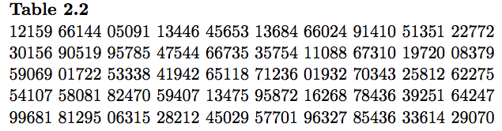
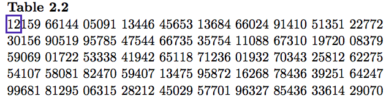

name: inverse layout: true class: center, middle, inverse --- # STAT 105: Lecture 3 ## Chapter 2: Data Collection .footnote[Course page: [imouzon.github.io/stat105](https://imouzon.github.io/stat105)] --- # Recap ## Where We Left Off With Chapter 2 --- layout:false .left-column[ ## Recap ### Last lecture ] .right-column[ **Section 2.1**: General Principles of Data Collection - Read on your own **Section 2.2**: Data Collection in Enumerative Studies - Enumerative studies: well defined population and sample taken from that population. - Most useful way to create the sample: **Simple Random Sampling** - any group of *n* objects has the same chance of composing the sample as any other group of *n* objects. - Suppose we have the alphabet (A, B, C, ..., Z) and wish to use simple random sampling to draw 3 letters. This means that the trio "F, M, Q" and the trio "A, B, C" have the same chance of being the letters that compose our sample. - "Random" is tough to do correctly on your own. There are a few simple tools, like *random number tables* or *pseudo random number generators*, that help us. ] --- layout:false .left-column[ ## Recap ### Last lecture ### Get a SRS ] .right-column[ ## Using Random Numbers to Get a Sample - These tables are generated randomly - each place on the table is equally likely to be filled by any one of the numbers 0 - 9. - The tables are created by taking advantage of some process that is physically random - radioactive decay or white noise for instance. - [RANDOM.org](http://www.random.org) for example uses the amount of atmospheric static to generate the numbers. - To use the randomly generated numbers to get a sample, simply assign a unique value to each item and take the items as they are generated. ] ??? Select 3 letters from RANDOM.org using this set up --- layout:false .left-column[ ## Recap ### Last lecture ### Get a SRS ] .right-column[ ## Using a Random Number Table For a simple random sample of size \(n\) from a population of size \(N\), 0. let \\(m\\) be the length in digits of \\(N\\) (for instance, if \\(N = 1032\\) then \\(m = 4\\) 1. assign each item in the population a value between 1 and \\(N\\) 2. starting on the top left, box the first \\(m\\) digits. If the value is between \\(1\\) and \\(N\\) then take the item with that value assigned to it as part of your sample. Otherwise, box the next four letters. 3. continue until you have selected \\(n\\) items <center>  </center> ] ??? Select 3 letters from RANDOM.org using this set up --- layout:false .left-column[ ## Recap ### Last lecture ### Get a SRS ### Ex: SRS tools ] .right-column[ ### Using a Random Number Table Take a simple random sample of size 3 from a set of 25 microprocessors using Table 2.2: 0. In this case \\(m = 2\\), and we are given \\(n = 3\\) and \\(N = 25\\). 1. Each microprocessor gets given a number from 1 to 25. 2. Begin selecting the items <center>  </center> 3. **Result**: select the microprocessors labeled 12, 15, and 05 ### Using pseudo-random numbers ```r sample(1:25,3) # some R code to get SRS of size 3 ``` ] ??? Select 3 letters from RANDOM.org using this set up --- name: inverse layout: true class: center, middle, inverse --- # Section 2.3 ## Principles for Effective Experimentation --- layout:false .left-column[ ## Recap ## Exp. Principles ### Taxonomy ] .right-column[ ## The Ideal Experiment Structure <center> <img src="www/figs/schemeit-project.svg" alt="dmc logo" height="125"> </center> A few terms to help us make sense of the natural complexity of characteristics influencing system performance: - **Response variable**: the characteristic indicating system performance which is being monitored. - **Supervised** or **managed variable**: the characteristics of the system that the investigator can control. - **Controlled variable**: a supervised variable that is held constant throughout the experiment. - **Experimental variable**: a supervised variable that is given several different settings during the experiment. ] --- layout:false .left-column[ ## Recap ## Exp. Principles ### Taxonomy ] .right-column[ ## The Ideal Experiment Structure, cont. <center> <img src="www/figs/schemeit-project.svg" alt="dmc logo" height="125"> </center> - **Blocking variables**: characteristics of the system that can be manipulated to create homogeneous environments within which to compare the effects of the primary experimental variables. - This is essentially extending the idea of control variables - we just create several environments with different controls. - How to recognize - the comparisons are not made comparing results from one block to results from another but instead comparing results inside a block. - **Concomitant variable**: characteristics that are observed but are not managed or responses. Could be influenced by either experimental variables or unobserved causes. May or may not have an influence on the response. ] --- layout:false .left-column[ ## Recap ## Exp. Principles ### Taxonomy ### Extraneous Vars ] .right-column[ ## The Ideal Experiment Structure, cont. <center> <img src="www/figs/schemeit-project.svg" alt="dmc logo" height="125"> </center> **Extraneous Variables** There are lots characteristics that could influence the response but are not of primary interest to the experimenter. For instance, - The experimenter could be unaware of their importance, - There may be no way to control them in the experimental setting, - There may be no way to control them outside of the experimental setting, However, if we ignore them completely, their effect won't just disappear - it could ruin our experiment. ] --- layout:false .left-column[ ## Recap ## Exp. Principles ### Taxonomy ### Extraneous Vars ] .right-column[ ## The Ideal Experiment Structure, cont. <center> <img src="www/figs/schemeit-project.svg" alt="dmc logo" height="125"> </center> There are two common ways to attempt to account for these effects: 1. **Blocking**: Treat the extraneous variables as blocking variables 2. **Randomization**: assign runs of the experiment to the different levels of the extraneous variables randomly, with the hope that it balances out in the end. - Ex: Strength of two types of metal bar measured - but both bars are being produced by the same machine. **Common Advice**: Block what you can control and randomize the rest (common, not necessarily good though - what can be controlled not universal). ] --- layout:false .left-column[ ## Recap ## Exp. Principles ### Taxonomy ### Extraneous Vars ### Wrap up ] .right-column[ ## The Ideal Experiment Structure, cont. <center> <img src="www/figs/schemeit-project.svg" alt="dmc logo" height="125"> </center> **Comparative study**: Need a valid point of reference - so if we want to know if the new is better than the old, you better try to get some comparable data on the old as well. **Repitition**: Multiple responses measured from the same conditions. ] ??? bar1 bar1 bar1 bar1 bar1 bar2 bar2 bar2 bar2 bar2 bar2 - Ex: Two techniques for treating arm injuries - but left/right could matter - Ex: Farmer planting fields with two different crops, interested in yield. --- layout:false .left-column[ ## Recap ## Exp. Principles ### Taxonomy ### Ch. 2, Ex. 7 ] .right-column[ ## The Ideal Experiment Structure, cont. <center> <img src="www/figs/schemeit-project.svg" alt="dmc logo" height="125"> </center> **Discussion**: Example 7, pg. 39 - Three types of wood and three types of glue, Dimond and Dix sought to investigate joint strength. - Issues: *drying time* and *pressure applied* during drying also important; smooth vs. rough wood; wood species have different moisture contents; the experiment is performed over two time periods. - Approach: all wood/glue combinations dried 90 minutes with same pressure applied, moisture content of wood type measured before gluing. ] ??? How do you measure moisture content? Cut the piece in half, record original weight and dried weight. managed variables - wood, glue, time, pressure controlled - time, pressure experimental - wood, glue concomitant - moisture